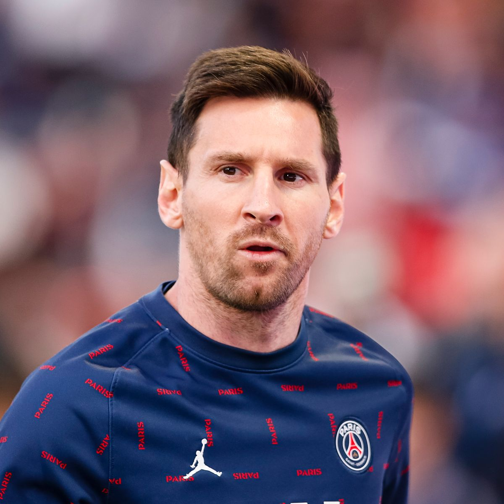

ABOUT HERO
INTRODUCTION
Lionel Andrés Messi, better known as Leo Messi, is an Argentine footballer who plays forward for Ligue 1 club Paris Saint-Germain and captains the Argentina national team. He was born on June 24, 1987. Messi, widely recognized as the best player in the world and one of the greatest players of all time, has won a record seven Ballon d'Or awards, six European Golden Shoes, and was nominated to the Ballon d'Or Dream Team in 2020. He spent his entire professional career with Barcelona, winning a club-record 35 trophies, including ten La Liga titles, seven Copa del Rey crowns, and four UEFA Champions Leagues until leaving in 2021.
Messi is a prolific goal scorer and creative playmaker who owns the records for most goals (474), a La Liga and European league season (50), most hat-tricks (36) and the UEFA Champions League (8), and most assists (192), a La Liga season (21) and the Copa América (17). He's also the South American male with the most international goals (81). Messi has almost 750 senior career goals for club and country, making him the all-time leading goal scorer for a single club.

Lionel Messi
Personal Details
| Full name | Lionel Andres Messi |
| D.O.B | 24 June 1987 |
| P.O.B | Rosario, Argentina |
| Height | 1.69m |
| Position | Foward |
Club Info
| Actual team | Paris-Saint-Germain |
| Number | 30 |
Career
| Year | Team | Aps | Gls |
| 2003-2004 | Barca C | 10 | 5 |
| 2004-2005 | Barca B | 22 | 6 |
| 2004-2021 | Barcelona Fc | 520 | 474 |
| 2021- | Paris-Saint-Germain | 26 | 6 |
STORY LINE
Messi was born and raised in central Argentina before moving to Spain at the age of 13 to join Barcelona, where he made his competitive debut in October 2004 at the age of 17. Within three years, he had established himself as a key player for the club, and in his first continuous season in 2008–09, he helped Barcelona win the first triple in Spanish football; same year, Messi won his first Ballon d'Or at the age of 22. Following three great seasons, Messi won four Ballons d'Or in a row, making him the first player to win the trophy four times in a row. [10] He established himself as Barcelona's all-time best scorer during the 2011–12 season, setting La Liga and European records for most goals scored in a single season.
Messi finished second for the Ballon d'Or the following two seasons, behind Cristiano Ronaldo (his perceived career rival), before resuming his best form in the 2014–15 season, becoming the all-time top scorer in La Liga and leading Barcelona to a historic second treble, for which he was awarded his fifth Ballon d'Or in 2015. In 2018, Messi was named Barcelona captain, and in 2019, he earned a record-breaking sixth Ballon d'Or. He signed for Paris Saint-Germain in August 2021 after being released from his contract.